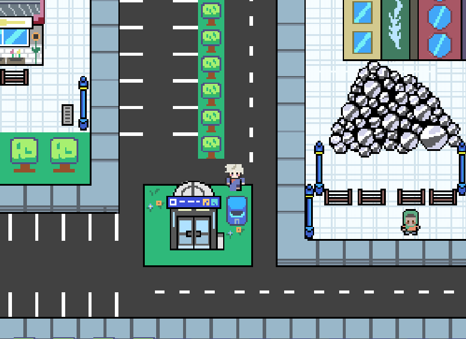

Case Study / Notes
Nightwave — Live Visualizer
 Process Note 01
Process Note 01
Initial stage exploration. I wanted to experiment with custom audio reactive shaders running directly inside the browser canvas while keeping frame rates consistent.

Process Note 02Refining color palettes. I tested high-contrast retro tones to give it an old-school display vibe without making the screen too distracting for late-night viewing.